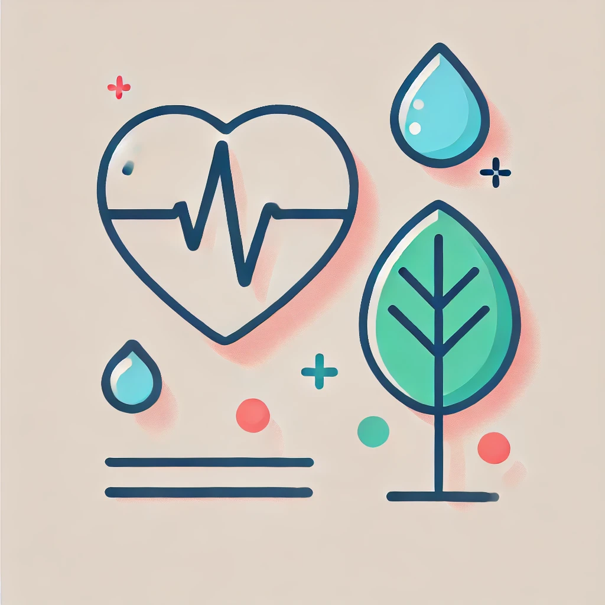
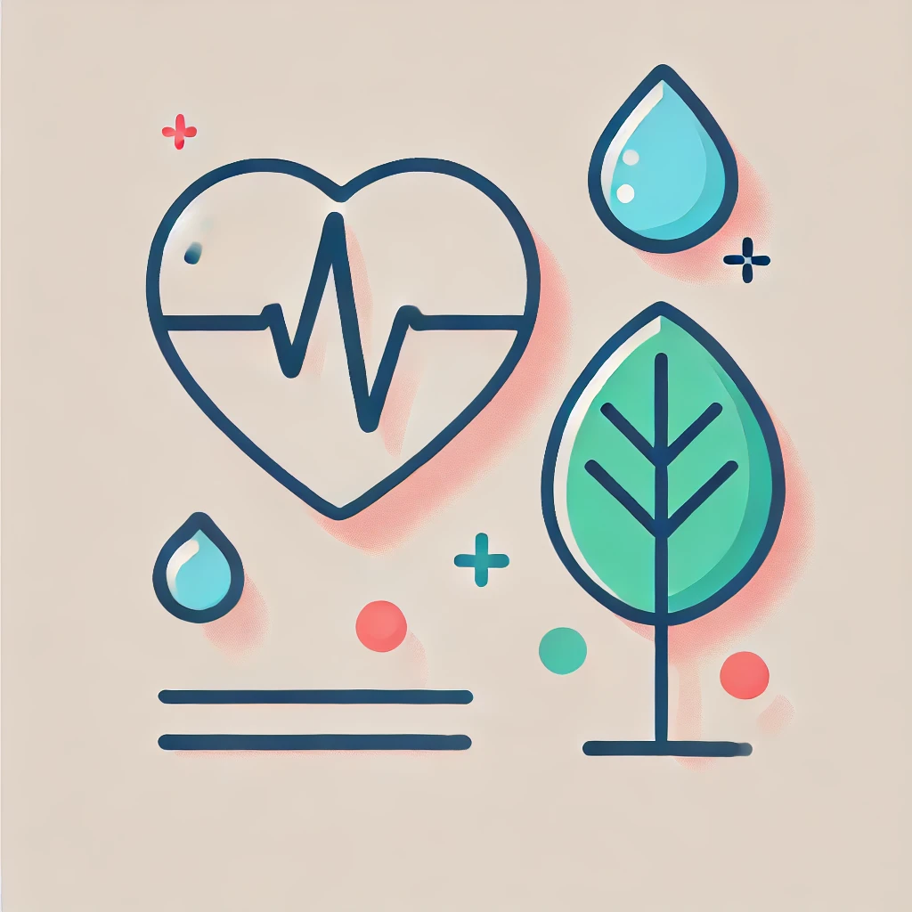

Save Health
Сайт про зберігання свого здоров'я в у мовах карантину
Правила для того щоб зберегти своє здоров'я
.jpg)
.jpg)
1. Дотримуйтеся гігієни
Регулярно мийте руки з милом не менше 20 секунд.
Використовуйте антисептики для дезенфекції
Уникайте доторків до обличчя, особливо очей, носа та рота.
2. Дотримуйтесь соціальної дистанції
Уникайте скупчень людей.
Тримайте дистанцію не менше 1,5 метра від інших.
По можливості працюйте та навчайтеся дистанційно.
3. Правильне носіння маски
Маска має закривати ніс і рот.
Міняйте маску кожні 2-4 години або після зволоження.
Не торкайтеся маски під час носіння.
6. Дезінфекція та чистота
Регулярно провітрюйте приміщення
Дезінфікуйте поверхні, до яких часто торкаєтесь (телефон, дверні ручки, клавіатура).
Одягайте чистий одяг після перебування на вулиці.
7. Правильний режим сну
Лягайте спати і прокидайтеся в один і той самий час.
Спіть не менше 7-8 годин на добу.
Уникайте використання гаджетів перед сном.
Як проходить карантин в інших країнах
Китай: Застосовували жорсткі обмеження, включаючи повний локдаун, цифрове відстеження контактів і масове тестування. Завдяки швидким діям вдалося суттєво знизити рівень захворюваності.
Італія: Одна з перших європейських країн, що зіткнулася з великим спалахом. Запроваджено суворий карантин, заборону на вихід без потреби, обмеження на пересування.
Швеція: Вибрала менш жорстку стратегію, орієнтуючись на рекомендації замість суворих заборон. Громадянам рекомендували дотримуватися дистанції, але локдаун не вводили.
 

.png)
Поради для свого здоров'я
Про для здоров'я